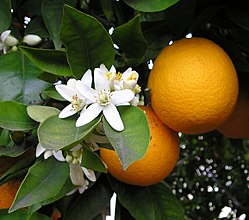

Tentang buah.com

Jeruk

Jeruk atau Limau adalah semua tumbuhan berbunga anggota marga Citrus dari suku Rutaceae (suku jeruk-jerukan). Anggotanya berbentuk pohon dengan buah yang berdaging dengan rasa masam yang segar, meskipun banyak di antara anggotanya yang memiliki rasa manis. Rasa masam berasal dari kandungan asam sitrat yang memang menjadi terkandung pada semua anggotanya.
Sebutan "jeruk" kadang-kadang juga disematkan pada beberapa anggota marga lain yang masih berkerabat dalam suku yang sama, seperti kingkit. Dalam bahasa sehari-hari, penyebutan "jeruk" atau "limau" (di Sumatra dan Malaysia) sering kali berarti "jeruk keprok" atau "jeruk manis". Di Jawa, "limau" (atau "limo") berarti "jeruk nipis".
Jeruk sangatlah beragam dan beberapa spesies dapat saling bersilangan dan menghasilkan hibrida antarspesies ('interspecific hybrid ) yang memiliki karakter yang khas, yang berbeda dari spesies tetuanya. Keanekaragaman ini sering kali menyulitkan klasifikasi, penamaan dan pengenalan terhadap anggota-anggotanya, karena orang baru dapat melihat perbedaan setelah bunga atau buahnya muncul. Akibatnya tidak diketahui dengan jelas berapa banyak jenisnya.
kegunaan jeruk
- Menurunkan Kolesterol
- Baik untuk Mata
- Melindungi Kulit
- Melindungi Jantung
- Sistem Pencernaan Lebih Baik
- Pendukung Kesehatan Tulang
- Memperbaiki Suasana Hati
Daftar Harga
| Jenis Jeruk | Harga | |
|---|---|---|
| Per Kilo | Per Biji | |
| Jeruk Keprok | Rp. 50.000,00 | Rp. 5000,00 |
| Jeruk Manis | Rp. 60.000,00 | Rp. 6000,00 |
| Jeruk Nipis | Rp. 70.000,00 | Rp. 7000,00 |
| Jeruk Lokal | Rp. 55.000,00 | Rp. 5500,00 |
Kembali Ke Atas